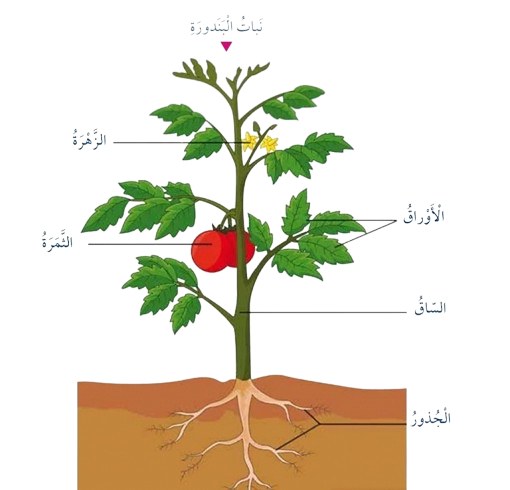
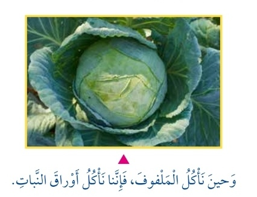
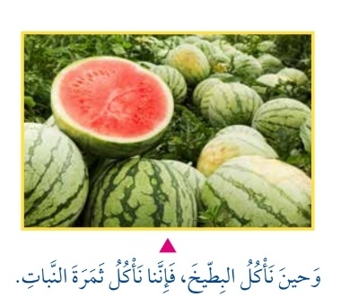
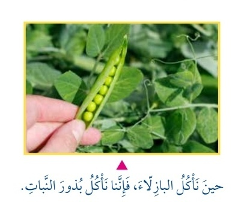
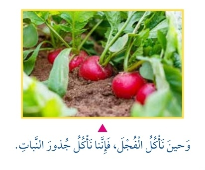

الدرس الأول: النباتات وأجزاؤها
الفكرة الرئيسية
التعرف على أجزاء النباتات الرئيسية (الجذور، الساق، الأوراق) وبعض الأجزاء الإضافية (الأزهار، الثمار)، وفهم وظائفها وأهميتها، بالإضافة إلى تحديد الأجزاء الصالحة للأكل في النباتات المختلفة.
أتعرف أجزاء النبات
أجزاء النبات الرئيسية:
- الجذور (Roots): تثبت النبات في التربة وتمتص الماء والأملاح المعدنية.
- الساق (Stem): يدعم النبات وينقل الماء والغذاء بين الأجزاء المختلفة.
- الأوراق (Leaves): تصنع الغذاء عبر عملية التمثيل الضوئي.
أجزاء إضافية في بعض النباتات:
- الأزهار (Flowers): تُكوّن الثمار والبذور.
- الثمار (Fruits): تحتوي على البذور وتساعد في انتشارها.

أميز الأجزاء الصالحة للأكل
حدد الجزء الصالح للأكل في النباتات التالية:
- البطيخ: نأكل الثمرة.
- الملفوف: نأكل الأوراق.
- الفجل: نأكل الجذور.
- قصب السكر: نأكل الساق.
- البازلاء: نأكل البذور.




صورة توضيحية لأجزاء النبات الصالحة للأكل
نشاط تعليمي
تصنيف أجزاء النبات
ارسم نباتًا وسمّ أجزاءه (الجذور، الساق، الأوراق، الأزهار، الثمار). ثم ناقش أي جزء من النبات يمكن أكله في أمثلة مثل البطيخ والملفوف.
الأدوات المطلوبة:
- ورق رسم
- ألوان
- صور نباتات مختلفة